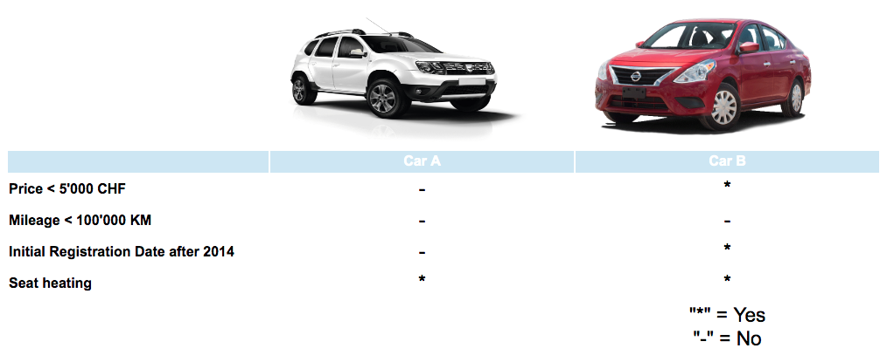

In the follwoing task, we will ask you to choose one out of two used cars that you prefer based on the presented information.
Here is an exemplar trial:

For each car you receive the information whether:
the price is below 5'000 CHF
the mileage is below 100'000 km
the car has a registration date after 2014
the car has seat heating
Asterisks illustrate YES the criterion is met and hyphens illustrate NO, the criterion is not met.
If you feel ready to make your choice, click on the continue button below the table, to indicate your choice on the following page.
In total, we will ask you to make 3 choices. In one of these choices you will additionally receive the recommendation by a car dealer, and in one choice the recommendation by a previous customer before you can choose which car you prefer.
Have you understood the instructions? Please ask the experimenter for help if you have additional questions.
If not, click the continue button to start the experiment!